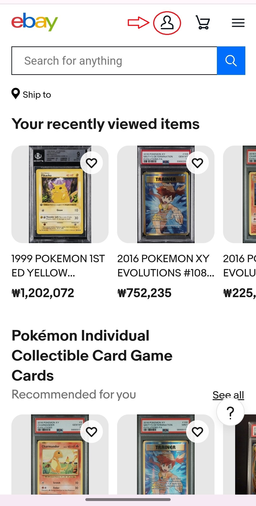
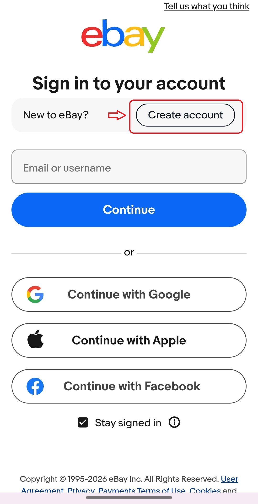
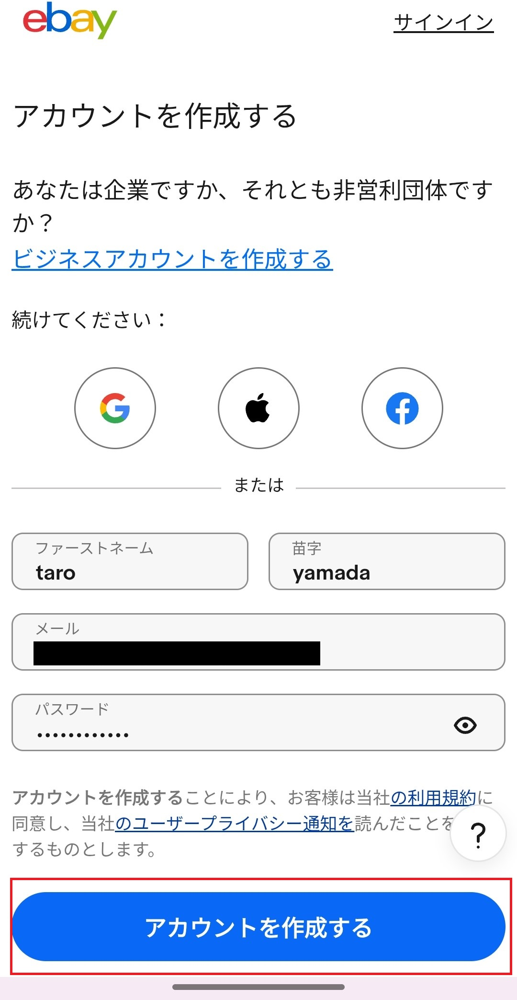
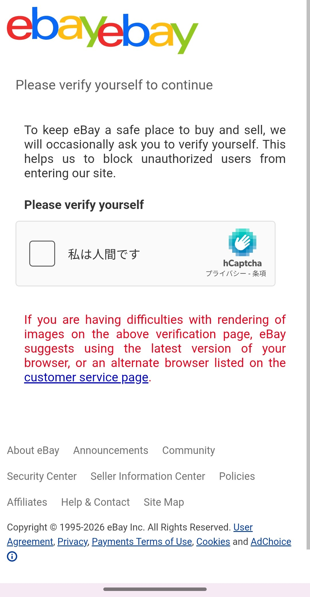
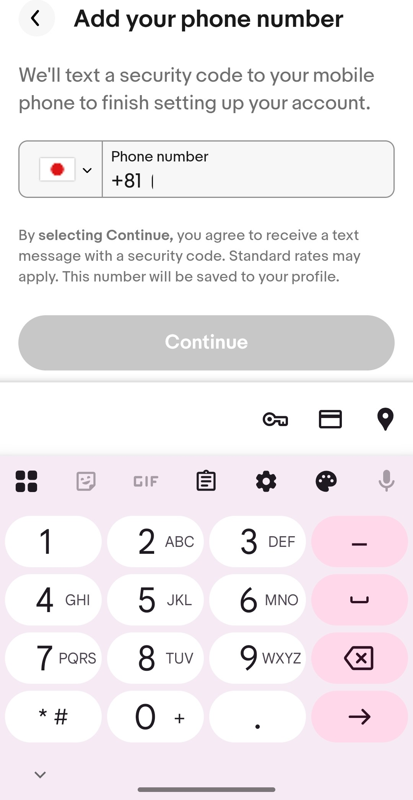
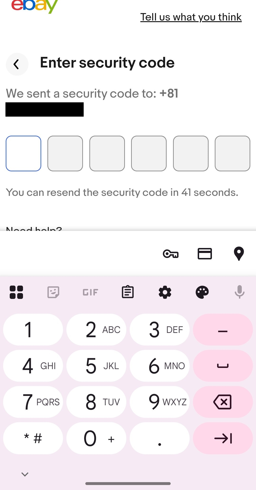
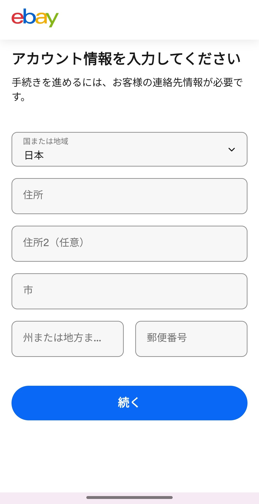
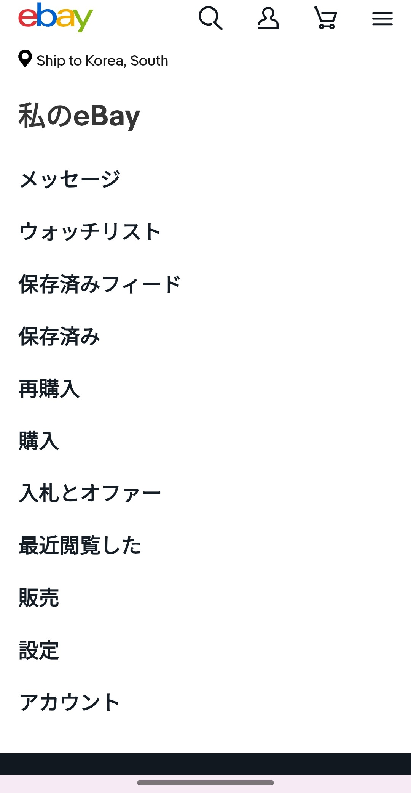

この記事では、eBayアカウントの作り方をスマホのブラウザで登録する手順を解説します。eBayはGoogleアカウントがあればそのままログインもできますが、今回は1から作る方法を紹介します。
アプリ版はiOSとAndroidで操作が異なる場合があるため、今回はブラウザ（Chrome）での登録を想定しています。eBayは英語サイトなので、必要に応じてChromeのページ翻訳機能を活用してください。
STEP 1：eBayにアクセスしてアカウント作成画面へ
ブラウザで ebay.com にアクセスし、画面右上の人型アイコンをタップします。

サインイン画面が表示されたら、「New to eBay?」の横にある 「Create account」 をタップします。

STEP 2：名前・メールアドレス・パスワードを入力

ファーストネーム・苗字・メールアドレス・パスワードを入力して「アカウントを作成する」をタップします。
STEP 3：ロボット認証（キャプチャ）

「私は人間です」のチェックボックスをタップして認証を完了させます。画像選択などが表示された場合はそれに従って進めてください。
STEP 4：電話番号でSMS認証

国旗のアイコンが日本（+81）になっていることを確認し、自分の携帯電話番号を入力して「Continue」をタップします。するとSMSでセキュリティコードが届きます。

届いたコードを入力欄に入力して進みましょう。
STEP 5：住所を登録する

住所の入力画面が表示されます。eBayは海外サービスのため、住所の書き方が日本とは逆順になります。日本では「都道府県→市区町村→番地」の順ですが、英語圏では番地から書き始めます。
例として「愛知県〇〇市〇〇町2-34 〇〇マンション2-10」の場合はこのように入力します。
| 項目 | 入力例 |
|---|---|
| 住所（Address） | 〇〇-cho 2-34 |
| 住所2（任意） | 〇〇 Mansion 2-10 |
| 市（City） | 〇〇〇-shi |
| 州・地方（State） | Aichi |
| 郵便番号（Zip） | 例：460-0001 |
国（Country）は「Japan」が自動で選択されているはずですが、念のため確認しておきましょう。入力が終わったら「続く」をタップします。
STEP 6：マイページが表示されれば完成！

「私のeBay」画面が表示されれば、アカウント作成完了です。パスワードは忘れないようにしっかり管理しておきましょう。
この記事のまとめ
- eBayはブラウザ（Chrome）からアカウント作成できる
- 名前はクレカ・PayPalと同じローマ字表記で入力する
- 電話番号によるSMS認証が必要（+81で日本番号を入力）
- 住所は日本と逆順（番地→町名→市→都道府県）で入力する